Interactive hash table exploration¶
Learning objectives¶
By the end of this session you will develop experience with:
- Understanding two basic hash table collision resolution strategies
- Separate chaining
- Linear probing
- Inserting, removing, and searching hash tables of these types
- Understaning load factor and how it is calculated
Launch the VisuAlgo hash table exploration tool¶
Visualgo is a wonderful, interactive, online tool for understanding the structure and functioning of numerous common data structures and algorithms using intuitive visualizations.
Launch the hash table explorer in a new tab (right click and 'Open Link in New Tab').
Separate Chaining¶
Upon launching VisuAlgo you'll be dropped into the Separate Chaining
'e-Lecture Mode'. You can exit this mode and enter 'Exploration Mode' by
simply clicking anywhere in the window outside the explanatory dialogue
pop-up. By default, it will populate the window with a new Hash Table
with random values for number of 'buckets' (M), and a random number of
items (N). Let's start by creating a new Hash Table with the same number of
buckets and items so we can all be looking at the same thing.
In the lower left there is a panel for applying different functions to
the simulation. Choose Create(M, N). Set M = 10 and N = 20, and push
Go. The interface will populate a new 10 bucket hash table with
20 random integer values. Because we are so used to counting in base 10,
it's easy to see that the compression function being used is simply
mod M (the least significant digit of each key equals the index of
the bucket it is stored in).
After you create a new Separate Chaining hash table you should see something like this, an array of buckets indexed 0-9, and a linked list of items within each bucket. 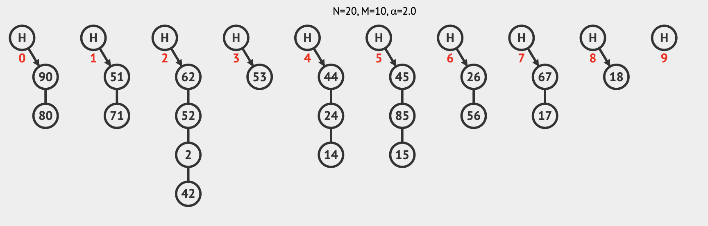
Hint: Steps to follow exactly the figures in the tutorial.
If you prefer to follow exactly the example in this tutorial you can do this:- `Create(M, N)` and set `M` = 10 and `N` = 0
- `Insert(v)` and copy/paste these values: 90, 80, 51, 71, 62, 52, 2, 42, 53, 44, 24, 14, 45, 85, 15, 26, 56, 67, 17, 18
Secondary containers of Separate Chaining Hash Tables
In this instance, the VisuAlgo team has decided to implement the separate chaining buckets as doubly-linked lists, which is smart because it means adding and removing items from the hash table will be really fast. This is a design decision which isn't always used, and which has complexity/performance tradeoffs which we will discuss further.
Separate Chaining Search¶
Pick the bucket in your simulation with the longest list of items and find the last item in this list. Let's say we want to find this item in our hash table, how does the search algorithm work in this case.
In my example, the 'deepest' item is 42 (I did not do this on purpose, I swear
it was random), so in the leftnav I will choose Search(v), enter 42 in the
text field, and push Go. Here you will see an animation of the search
process, where first the algorithm determines the correct bucket
(42 mod 10). Finding this bucket full, it proceeds to walk down the list
until it finds the item of interest.
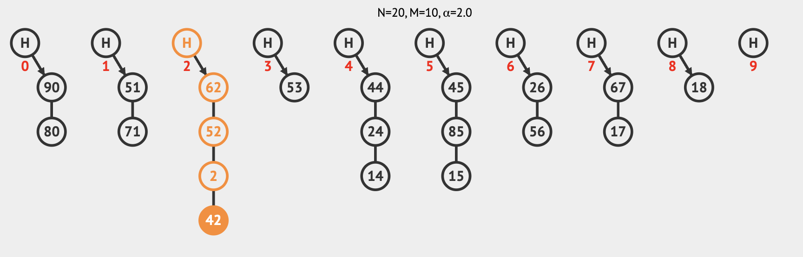
Separate Chaining Insert¶
Insertion for Separate Chaining (in this implementation) does something
interesting. It first identifies the correct bucket with mod, and then it simply
appends the item to the doubly-linked list in this bucket (using the tail
pointer of the first item). Choose a value that does not already appear in
the bucket you have been manipulating (I will choose 12). On the leftnav select
Insert(v) and enter 12 (or whatever you choose).
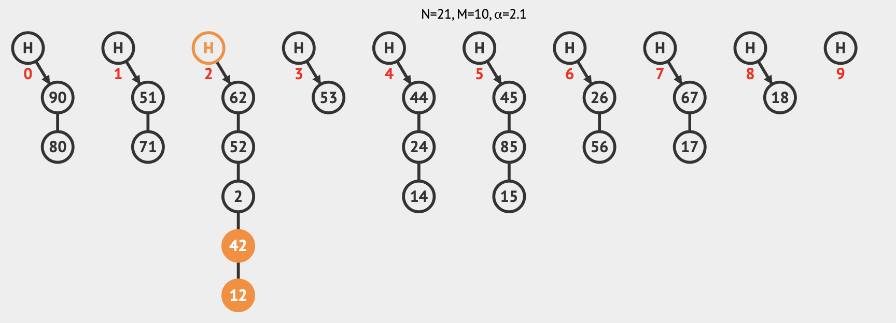
Discussion Item
I said this behavior is interesting, so what might be interesting about it? What are the consequences of this 'blind' tail insertion? What happens if you try to insert this same item again? What are the benefits of this design choice and why might this not be 'optimal' behavior?
Separate Chaining Remove¶
Stick with the bucket in your hash table with the most items (the one we have
been using so far) and pick an item in the bucket that you want to remove
(I'll remove 42). In the lower-left open the function pane and choose
Remove(v), enter 42, and push Go. You'll see the animation of the
algorithm that defines item removal.
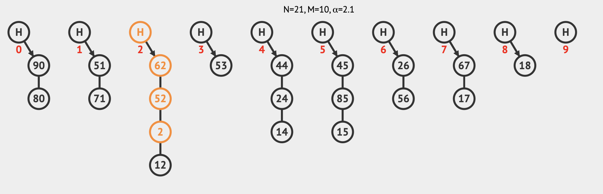
Try removing an item that doesn't exit (I will try to remove 42 again). In
this case you can see the algorithm finds the appropriate bucket, and then
walks the list searching for the item to remove. Not finding it, the program
informs you the item is not found in the hash table and quits. At this point,
in a python program it would throw a KeyError which you would have to handle
somehow (or not).
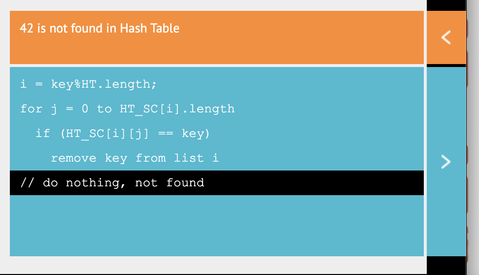
Separate Chaining Load Factor¶
The VisuAlgo interface also does a nice thing in automatically calculating and presenting the Load Factor of this hash table. Recall from the reading that load factor is defined as the average number of items per bucket (more specifically it is the ratio of the total number of items in the hash table divided by the length of the bucket array). In VisuAlgo this is denoted as α with α = N/M.
On differences in notation
Notice that our reading uses slightly different notation (λ = n/N), where λ is load factor, n is number of items, and N is number of buckets. The notation is different but the equation is identical in meaning.
Create a new separate chaining hash table with M = 10 and N = 40. This is a
very 'full' hash table. As you will recall from the reading, core hash table
functions (insert/delete/search) degrade in performance as a function of α
(i.e. they run with O(α) on average). Our text suggest that α < 0.9 is
optimal for hash tables with separate chaining.
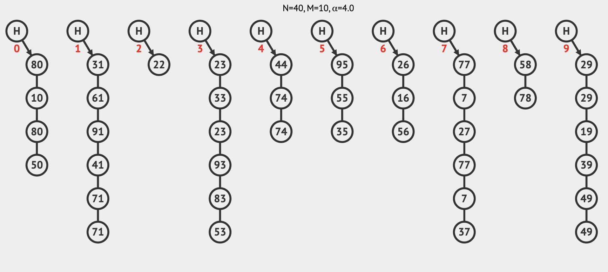
One of the features of separate chaining hash tables is that they are still capable of operating (though with reduced performance) when α > 1. This is not the case for all collision resolutions schemes, particularly Linear Probing (though it has its own advantages).
Linear Probing¶
Now we will turn to a different collision resolution scheme: Linear Probing.
In the top-nav click on LP, and this will switch you to the linear probing
exploration mode. Just like before, there are probably lots of buckets in the
default view, so choose Create(M, N) and set M = 10 and N = 5.
After you create a new Linear Probing hash table you should see something like this, an array of buckets indexed 0-9, with 5 of the buckets occupied. 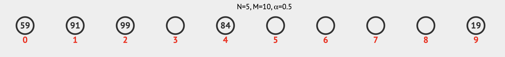
Hint: Steps to follow exactly the figures in the tutorial.
If you prefer to follow exactly the example in this tutorial you can do this:- `Create(M, N)` and set `M` = 10 and `N` = 0
- `Insert(v)` and copy/paste these values: 91, 84, 19, 59, 99
There are two things to notice here: First, is that there are no
secondary data structures with linear probing, it is organized as a flat
array; and second is that some of the items appear to be in their 'proper'
bucket with respect to mod 10(e.g. 84) whereas others are in buckets which
at first glance appear to be 'wrong' (e.g. item 99 in bucket 2). In fact,
these two properties are very much related and are at the core of the
collision resolution mechanism of this data structure. Let's try to get
some insight into linear probing by searching for item 99, to try to figure
out how it ended up in bucket 2.
Linear Probing Search¶
In the leftnav choose Search(v), type 99, and press Go (you should
choose a key that appears 'misplaced' in your own hash table). You will now
see an animation that illustrates the algorithm probing for the input
key in a linear fashion when it is not found in the expected bucket (in
this case bucket 9).
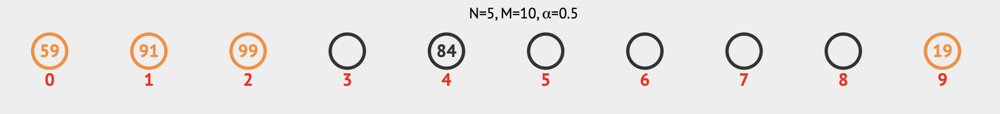
Not finding 99 in bucket 9, the algorithm 'wraps' to bucket 0 which is full but not with 99, continues to bucket 1 which is also full with not-99, and then finding 99 in bucket 2 it happily returns this value (or should).
Ooops!¶
Here is a good example of "your instructor isn't always right". The VisuAlg
hash table simulator correctly locates key 99 in the 2nd bucket, but the
interface tells us that this key wasn't found. Somebody should inform the
developers! 
Linear Probing Insert¶
So we are getting a sense of the mechanism of linear probing and we might condense it's behavior into a verbal algorithm: 'If the bucket I want is full check the next one; rinse and repeat'. Let's try to interogate our understanding of this by inserting a new item. As a reminder, here is the current state of my hash table:
Pick an occupied bucket in your hash table with lots of consecutively
occupied buckets downstream from it. Choose an integer value that will mod
to fill this chosen bucket. Now, look at the current state of the hash table
and try to predict which bucket this new item will go into. In this example I
will choose an integer that mods to 0, so how about 0.
Here is my result after inserting 0: 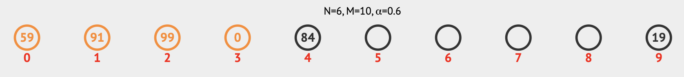
For yourself, choose Insert(v) and do something similar for your own hash
table and you'll see the process the insertion algorithm takes to first check
the nth bucket (which your chosen integer should mod to), and then
to consecutively probe each subsequent bucket until it finds an empty one.
Linear Probing Remove¶
Linear probing hash tables have to do a bit more work to maintain a consistent state when items are removed. Unlike separate chaining, you can't just remove an item and forget about it, because the position that the item is in might not be the exact bucket that it belongs in, but rather it may have landed 'downstream' from its true home because of intervening occupied buckets. This has consequences for searching which we will return to momentarily. One mechanism for handling this is to insert a special marker to denote 'available but formerly occupied' buckets (from your reading on page 419).
I want to remove an item that has been inserted by probing (not in its
'correct' bucket), so I'll choose 59 (which is currently in the 0th bucket).
In the lower-left open the function pane and choose Remove(v), enter 59, and
click GO. You'll see the algorithm check the 9th bucket, and wrap around to
the 0th before it finds the correct item to remove.
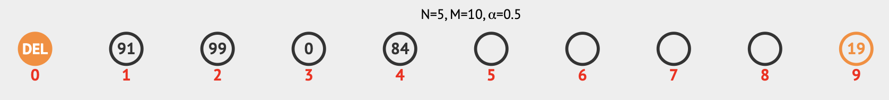
VisuAlg denotes deleted but available buckets with the DEL marker. Let's see how it handles searching and inserting with this pseudo-vacant bucket.
For me, I will now try searching for 99 (in the 2nd bucket). I want the search algorithm to 'skip over' the DEL bucket in the search because it's available but formerly occupied, and indeed this is what happens.
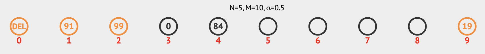
Now lets try to insert a value that we expect will land in the 0th bucket. If I choose to insert 29, think to yourself where this item will land in the hash table. Let's try it.
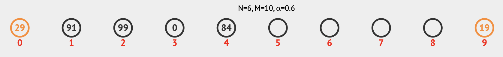
To maintain consistency DEL is skipped over for searches, but not for insert operations! 29 lands in the first available bucket downstream from bucket 9, which is the vacant 0 bucket in this case. It's all quite clever!
One last experiment is to try removing an item that doesn't exit. For me lets
try to remove 92, the 2nd bucket (where 92 'belongs') is full and there
several full buckets downstream so it should be interesting. (NB: Like
search, remove should also skip DEL buckets, but we don't validate
this behavior here).
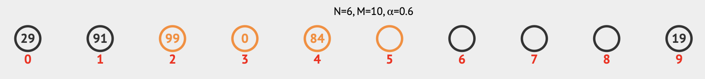
At first you can see the expected behavior, that it checks bucket 2 and, not finding the target value, begins probing downstream buckets. When it reaches the first empty bucket (in this case 5), it stops and returns '92 not found'. It might at first seem counterintuitive that the algorithm would not have to 'check' all buckets (just in case?), but in fact the organization of this data structure is such that if 92 is in the hash table, it is guaranteed to be discoverable by the method of linear probing before an empty bucket is reached. Magic.
Linear Probing Load Factor¶
The VisuAlgo interface is still showing us the load factor (α), which
I am sure you can see for the linear probing hash table we have been
manipulating is now 0.6. Linear probing hash tables are constraind to a
maximum of α = 1, and perfomance begins to degrade with α > ~0.5. The python
dict class implements a hash table with linear probing and the α that
it maintains will be an exercise we will investigate in a
future tutorial.
Free Play with Fuzzing¶
Here comes my favorite part of being a computer scientist: To learn a new tool and then to figure out how I can break it! This is not wanton destructivism, we can actually learn a lot about how a tool works by studying edge cases and boundary conditions. Edge cases and boundary conditions can be pretty much anything you think the programmers who designed this interface did not anticipate as acceptable input. Think about the 'expected' input values and try to nudge these in different directions. If a function wants a number, give it a string, give it a negative number, give it a really big number, how about a float? Push the boundaries and you'll see better how the tool behaves. In specific, here what you will mostly be learning about is the behavior of the Hash Table data structure as implemented by VisuAlgo, but this mindest of what is sometimes called 'fuzzing' is applicable everywhere, and it's fun!
Challenge: Spend a few minutes testing edge cases and see if you can find any interesting behavior of the VisuAlgo hash table implementations to report back to the class.